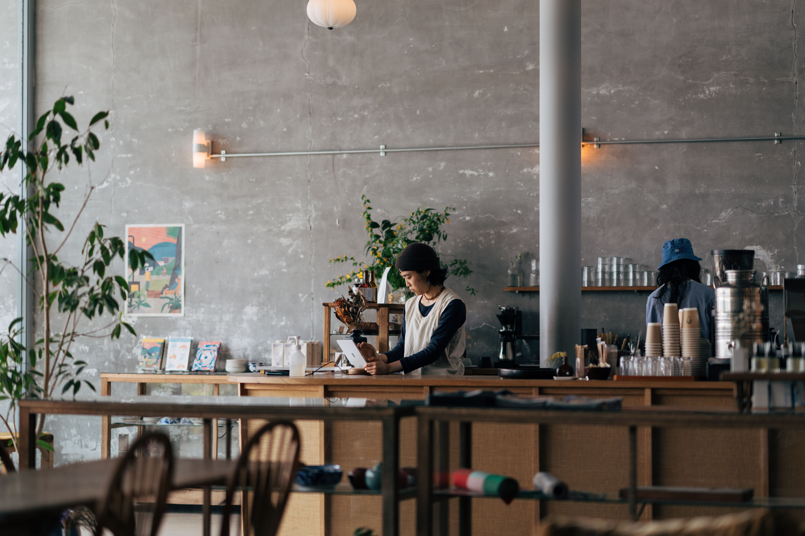

Get to know us
@ frosta
Quality ingredients, ceremonial grade matcha, and a space crafted for slow mornings and quick refreshers. Welcome to your daily ritual.
About us
Founded on a love for quality ingredients and mindful design, our café was created as a peaceful retreat from the noise of everyday life. At the core of our menu is authentic Japanese ceremonial grade matcha—whisked fresh to order and paired with balanced, seasonal flavors. From timeless classics to festive creations, every beverage is designed to nourish both body and mind. We are dedicated to creating a warm atmosphere where quality, aesthetics, and community meet. Step inside, slow down, and enjoy the moment. Making every day a little brighter, one sip at a time.
Born out of a love for quality matcha and slow mornings, our café is a warm space built for daily rituals. We serve authentic Japanese ceremonial matcha, thoughtfully crafted drinks, and seasonal flavors—made simple, honest, and with care for the planet.


Mindful by nature
We believe that every cup we serve should nourish both our community and the planet. For us, sustainability is a commitment integrated into every step of our process. Our ceremonial grade matcha is grown and harvested by family-owned farms in Japan that rely on traditional, eco-friendly techniques. By working directly with producers who prioritize soil health, we ensure the highest quality matcha while honoring the land it comes from. We’re constantly adapting and finding new ways to make our space as green as it is welcoming.
We believe every sip should respect the planet. Our ceremonial matcha is ethically sourced directly from family farms in Japan, and all our takeaway packaging is 100% plant-based and compostable. Simple, mindful, and made with care for tomorrow.